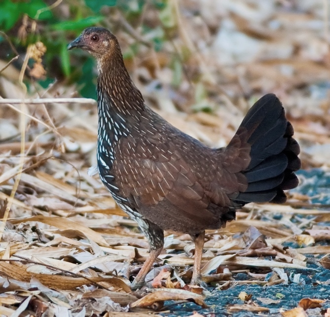

The chicken (Gallus domesticus) is a domesticated junglefowl species. Rooster or cock is a term for an adult male bird, and a younger male may be called a cockerel. A male that has been castrated is a capon. An adult female bird is called a hen and a sexually immature female is called a pullet.
Originally raised for cockfighting or for special ceremonies, chickens were not kept for food until the Hellenistic period (4th-2nd centuries BC). Humans now keep chickens primarily as a source of food (consuming both their meat and eggs) and as pets.
Chickens are one of the most common and widespread domestic animals, with a total population of 23.7 billion as of 2018. There are more chickens in the world than any other bird. There are numerous cultural references to chickens - in myth, folklore and religion, and in language and literature.
Genetic studies have pointed to multiple maternal origins in South Asia, Southeast Asia, and East Asia. From ancient India, the chicken spread to Lydia in western Asia Minor, and to Greece by the 5th century BC. Fowl have been known in Egypt since the mid-15th century BC, with the "bird that gives birth every day" having come from the land between Syria and Shinar, Babylonia, according to the annals of Thutmose III.

Junglefowl are the only five living species of bird from the genus Gallus in the bird order Galliformes, and occur in parts of South and Southeast Asia. They diverged from their common ancestor about 4-6 million years ago.
Although originating in Asia, remains of junglefowl bones have also been found in regions of Chile, which date back to 1321-1407 CE, providing evidence of possible Polynesian migration through the Pacific Ocean.
These are large birds, with colourful plumage in males, but are nevertheless difficult to see in the dense vegetation they inhabit.
As with many birds in the pheasant family, the male takes no part in the incubation of the egg or rearing of the precocial young. These duties are performed by the drab and well-camouflaged female. Females and males do not form pair bonds; instead, the species has a polygynandrous mating system in which each female will usually mate with several males. Aggressive social hierarchies exist among both females and males, from which the term "pecking order" originates.
The junglefowl are omnivorous, eating a variety of leaves, plant matter, invertebrates such as slugs and insects, and occasionally small mice and frogs.
One of the species in this genus, the red junglefowl, is of historical importance as the ancestor of the chicken, the only domesticated species. Although the grey junglefowl, Sri Lankan junglefowl and green junglefowl are likely to have also been involved.
The Sri Lankan junglefowl is the national bird of Sri Lanka.